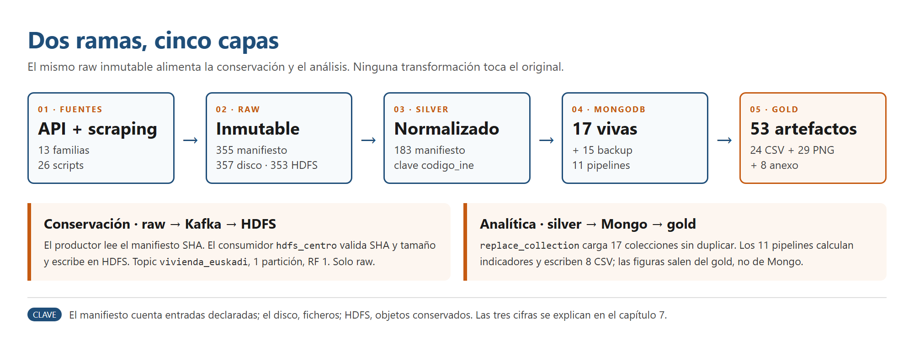
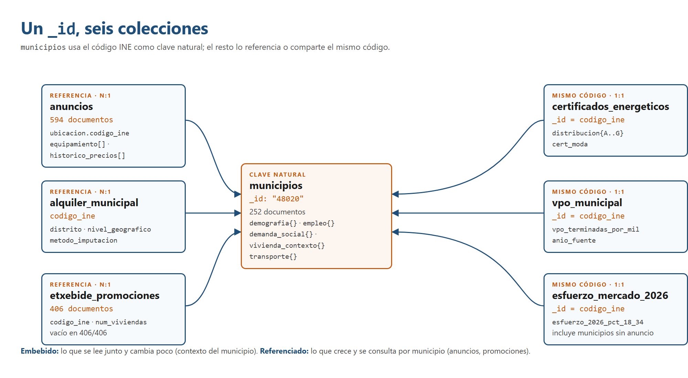
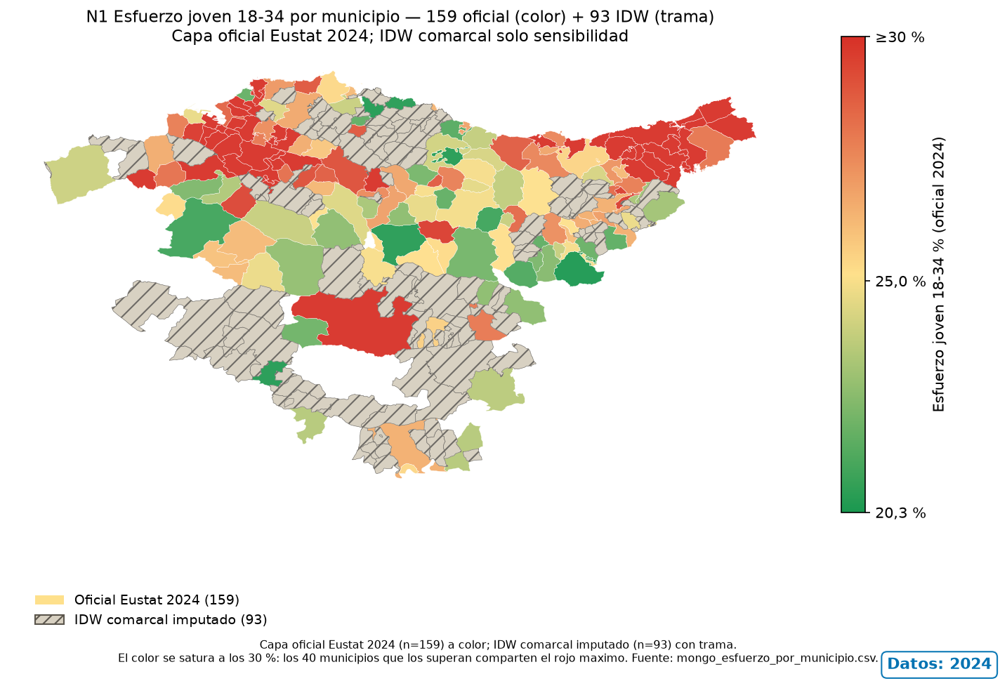
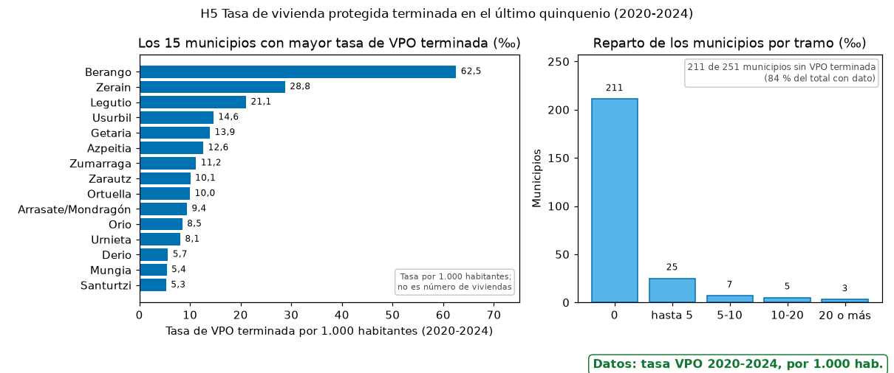
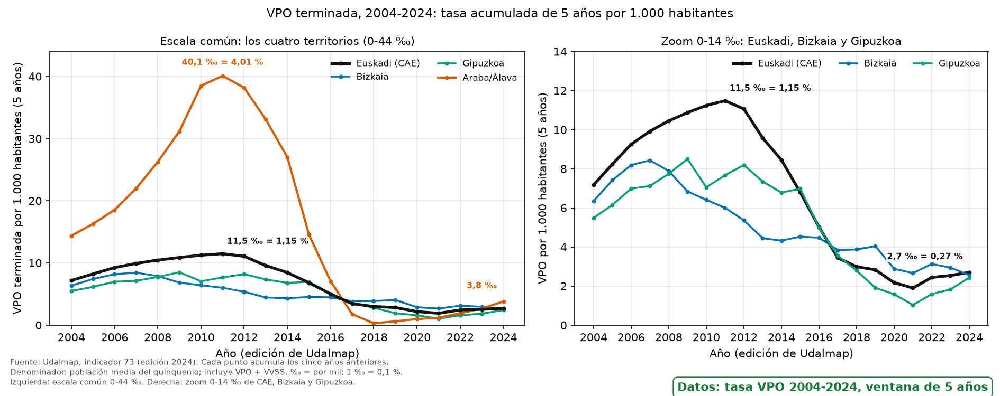
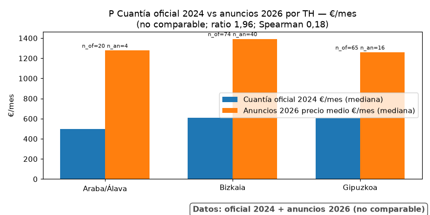
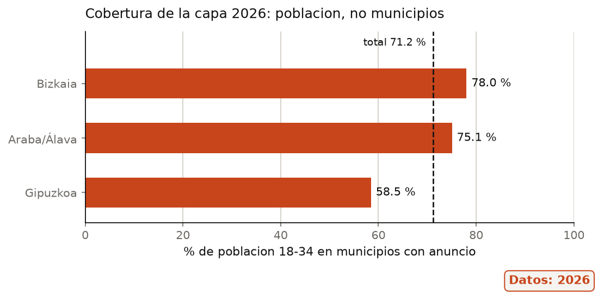
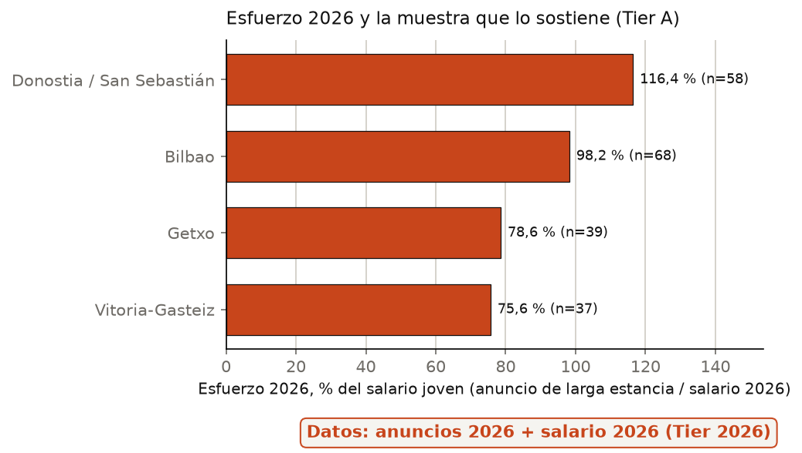
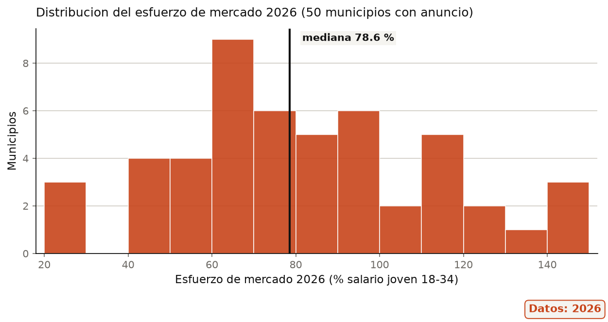

Cifras verificadas el 2026-11-13. Fuente única:
docs/memoria/_cifras.json.
Índice
- Contexto y pregunta
- Arquitectura de datos
- Cómo se construyó
- Modelo MongoDB
- Análisis e indicadores
- Resultados y conclusiones
- Dificultades y decisiones
- Límites y verificación
- Anexos
Resumen
El esfuerzo mediano en los 159 municipios con alquiler oficial es
26,61 %, pero 40 (25,16 %) superan el 30 % de la renta. La evidencia
sólida se limita a 4 municipios (Tier A de 2026); el Tier B, con 11 a 19
anuncios, queda como indicativo. Su esfuerzo de 2024 va de 28,60 % en
Getxo a 38,17 % en Donostia; el máximo de la capa oficial es Barakaldo,
38,50 %, que en 2026 no tiene muestra suficiente. La capa 2026, con 50
municipios y 287 anuncios, da una mediana de 78,55 % con salario
ajustado y 57,77 % con renta 2024; no es comparable con 2024 porque
cambia la fuente del numerador. Las dos capas se presentan por separado,
los municipios sin dato se declaran y la oferta de anuncios no sustituye
al alquiler oficial.
1. Contexto y pregunta
Este capítulo delimita la pregunta, la unidad de análisis y las dos
capas de datos que el proyecto mantiene separadas.
1.1 El reto
La pregunta de partida es si una persona joven puede independizarse
en Euskadi con su salario. El proyecto la traduce a un indicador
comparable: el porcentaje de la renta joven que se consume en alquiler.
Un municipio es una respuesta mejor cuanto menor es ese esfuerzo, pero
solo si el dato existe y es comparable con el de los demás.
El resultado es una lectura territorial del esfuerzo, no un listado
de municipios baratos. Hay tres cautelas: la renta es un proxy, el
alquiler oficial no cubre todos los municipios y la oferta de anuncios
no representa el parque completo.
| Pregunta |
Indicador |
Fuentes |
| ¿Qué parte de la renta joven se va en alquiler? |
Esfuerzo joven (%) |
Renta, alquiler oficial y anuncios |
| ¿Cuánta evidencia sostiene el dato? |
Tier A/B/C/D |
Cobertura y muestra de anuncios |
| ¿Qué se paga hoy en el mercado? |
Esfuerzo 2026 |
Anuncios 2026 y salario ajustado |
1.2 La unidad de análisis
Todo el pipeline converge en el código INE de cinco dígitos. Es la
clave natural de municipios, el nexo con los anuncios y la
unidad de los 252 municipios de Euskadi. Usar una sola clave evita el
problema clásico de los cruces por nombre: dos municipios con el mismo
topónimo en territorios distintos, o un nombre con tilde frente a otro
sin ella. En Mongo, el _id de municipios es el
propio código ("48020"), no un ObjectId.
1.3 Dos capas que no se restan
La capa 2024 mide esfuerzo con alquiler oficial en 159 municipios y
se completa por interpolación (IDW) en los 93 restantes. La capa 2026
mide oferta de mercado con 594 anuncios. Son dos fotografías con fuentes
distintas y no forman una serie temporal: se presentan por separado y no
se restan.
Un anuncio de 2026 y un alquiler registrado de 2024 no miden lo
mismo: el primero es oferta publicada y el segundo, contrato registrado.
Restarlos produciría una “evolución” que en realidad es un cambio de
fuente.
1.4 Qué no responde el
proyecto
No estima el salario municipal de la población joven, no mide la
calidad de la vivienda y no sustituye un trabajo de campo. Cuando falta
un dato, se declara; no se rellena con una estimación presentada como
observación.
2. Arquitectura de datos
El capítulo sigue el recorrido del dato desde la fuente hasta el
análisis y explica por qué hay dos ramas sobre los mismos
originales.
2.1 Dos ramas sobre los
mismos ficheros
El sistema tiene una rama de conservación y una rama analítica. La
primera copia los originales a HDFS y simula la llegada de anuncios con
Kafka. La segunda limpia, cruza y carga en MongoDB para analizar. Las
dos parten del mismo raw inmutable: ningún dato se corrige antes de
conservarse.
La separación es deliberada. Si la transformación cambia, el original
sigue disponible para reprocesar; si el clúster falla, el análisis puede
continuar en local.
2.2 Cinco capas
| Capa |
Qué contiene |
Dónde vive |
Tamaño |
| Fuentes |
API, scraping y Open Data |
extract/01…26 |
26 scripts |
| Raw |
Original inmutable con SHA-256 y .FROZEN |
data/raw/ |
355 manifiesto · 357 disco (355 visibles) · 353 HDFS |
| Silver |
CSV normalizados a codigo_ine |
data/procesado/ |
183 manifiesto · 187 disco |
| MongoDB |
Colecciones de análisis y pipelines |
vivienda_euskadi |
17 vivas + 15 backup |
| Gold |
CSV y PNG listos para el informe |
data/resultados/ |
55 (24 CSV + 31 PNG) + 8 anexo |
Las tres cifras de raw no son intercambiables: el manifiesto cuenta
entradas declaradas, el disco cuenta ficheros y HDFS cuenta objetos
conservados. La diferencia se explica en el capítulo 7.
2.3 La rama de conservación
La extracción cubre 13 familias: Eustat, INE, Fotocasa, Pisos.com,
RealtyAPI, Open Data Euskadi (Etxebide, emancipación, certificados,
promociones y VPO), Udalmap, Lanbide, OSRM, ECVI, geografía y áreas
funcionales, transporte GTFS y equipamientos (educación y salud). Son 26
scripts numerados; el scraping y las descargas no forman parte del
orquestador.
El productor lee el manifiesto SHA y publica un mensaje
raw_manifest con rel, size y
sha256. El consumidor del grupo hdfs_centro se
suscribe al topic vivienda_euskadi en
10.22.87.215:9092, descarta cualquier mensaje que no sea
raw_manifest (por eso el topic antiguo de pruebas no
contamina), valida SHA y tamaño contra data/raw y escribe
en
/user/iabd-user15/bigdata_reto/vivienda_euskadi/data/raw.
El topic tiene 1 partición y factor de replicación 1. Los 353 objetos
conservados suman 895.597.901 bytes.
2.4 La rama analítica
Silver se carga en 17 colecciones vivas con
replace_collection. Los pipelines de agregación calculan
los indicadores y escriben 8 CSV en gold. El resultado final son 55
artefactos (24 CSV y 31 PNG), más 8 PNG de anexo.
2.5 Una excepción
declarada: HDFS solo raw
HDFS conserva los originales, no silver ni gold. Es un requisito del
alcance del reto. La reproducibilidad del análisis se apoya en el
manifiesto y en los scripts, no en una copia distribuida de los
intermedios.

Figura 2.1. Las dos ramas comparten el raw inmutable. HDFS conserva
originales; MongoDB y gold sostienen el análisis. Fuente:
docs/memoria/build.py,
storage/kafka_hdfs_uploader.py y
scripts/run_pipeline.py.
3. Cómo se construyó
El capítulo describe el pipeline que va de la fuente al gold y
comprueba que se puede ejecutar sin tocar MongoDB a mano.
La extracción combina API, scraping y descargas Open Data. Cada
fichero se guarda con su SHA-256 en
docs/raw_manifest_sha256.txt y se marca con
.FROZEN; a partir de ahí es inmutable. El manifiesto
registra lo que se descargó y permite detectar un fichero alterado sin
abrir su contenido. Hoy tiene 355 entradas y
extract/generar_manifest.py --verify las comprueba con 0
errores.
3.2 El orquestador y las fases
python scripts/run_pipeline.py encadena cuatro fases:
silver, quality, mongo y
gold. La fase mongo es destructiva y exige
--allow-mongo-write; --fase all ejecuta
silver, quality y gold, nunca mongo. --dry-run lista los
pasos y --strict convierte los avisos en fallo. Si un paso
devuelve un código distinto de 0, la fase se aborta y no se propaga un
dato mal formado.
La extracción y el volcado a HDFS quedan fuera de este orquestador:
se ejecutan con sus scripts y su propio control. El DAG de 40 nodos vive
en transform/run_all.py y corresponde a la fase silver; el
orquestador lo invoca como un paso, no lo replica.
| Fase |
Comando |
Salida |
| silver |
transform/run_all.py |
183 CSV en data/procesado |
| quality |
normalizar_metadata + manifiestos |
sidecars y manifiesto SHA |
| mongo |
scripts/run_mongo_pipeline.py (opt-in) |
17 colecciones |
| gold |
capa_2026 + análisis + figuras |
55 artefactos |
3.3 Silver: normalizar
sin perder el original
Silver convierte 183 ficheros de entrada en CSV con
codigo_ine como clave. Aquí se tratan nulos, duplicados y
tipos: fechas como fecha, importes como número, códigos como cadena de
cinco dígitos. El original no se toca; si una regla cambia, se regenera
silver desde raw.
3.4 Limpieza con PyMongo
La limpieza es una fase con operaciones verificables.
canonicalize_codigo_ine normaliza el código en
anuncios, alquiler, indicadores y
el resto de colecciones con update_many.
mark_nulls marca los ausentes y $unset retira
los centinelas. resolve_duplicates agrupa por
(portal, id_anuncio) y por
property_fingerprint, y borra todos los documentos del
grupo menos uno; en alquiler usa
(codigo_ine, distrito, nivel, metodo).
convert_types convierte precios de texto a
Decimal128, habitaciones a entero y booleanos a
bool con $convert.
3.5 Carga idempotente
La carga usa replace_collection: construye la colección
en __staging, copia la anterior a __backup con
$out y renombra la staging. Una segunda ejecución deja el
mismo estado que la primera, sin duplicados ni documentos a medias. Los
15 backup que aparecen en el inventario son la huella de ese mecanismo,
no colecciones de trabajo.
3.6 Gold y una laguna
declarada
Los pipelines de agregación escriben 8 CSV y los scripts de figuras
generan 31 PNG. Gold es la única capa que el informe consume; no se
dibuja directamente desde Mongo para que una figura se pueda reproducir
sin conexión.
Cada figura declara su año con un sello en la esquina inferior
derecha, y el mismo texto se repite en el pie de la figura. El sello no
se coloca a ojo: antes de escribir el PNG, el generador reserva una
franja inferior del lienzo y mide la caja del sello contra la de todos
los textos visibles. El recuento de solapes queda en los metadatos del
PNG y scripts/verificar_vintage_figuras.py falla si alguno
no es cero, de modo que una figura nueva no puede publicarse pisando una
etiqueta.
Queda una laguna: transform/run_all.py --check señala
que falta auditoria_lagunas_silver.csv. No se regeneró
porque añadiría un artefacto más al gold y obligaría a rehacer las
cuentas del deck. Se declara aquí y en el capítulo 8.
4. Modelo MongoDB
El capítulo justifica el modelo documento a documento y comprueba que
las operaciones son correctas e idempotentes.
4.1
La regla: lo que se lee junto se embebe, lo que crece se referencia
municipios se lee entero para pintar una ficha y cambia
poco: demografía, empleo, demanda social, vivienda y transporte van
embebidos. anuncios crece cada día y se consulta por
municipio, modalidad y precio: se referencia con
ubicacion.codigo_ine. La decisión evita duplicar en cada
anuncio un bloque de contexto que no cambia.
| Colección |
Documentos |
Decisión |
municipios |
252 |
Contexto embebido; _id = código INE |
anuncios |
594 |
Referencia a municipio; arrays de equipamiento e histórico |
etxebide_promociones |
406 |
Documento por promoción; num_viviendas puede ser
nulo |
certificados_energeticos |
252 |
Un documento por municipio; distribución A–G embebida |
vpo_municipal |
252 |
Indicador terminado por municipio |
esfuerzo_mercado_2026 |
252 |
Capa 2026 separada; incluye municipios sin anuncio |
4.2 Colecciones y clave
natural
El sistema tiene 17 colecciones vivas y 15 de respaldo, 32 en total.
La clave natural es el código INE: el _id de
municipios es "48020", no un ObjectId. No hay
un campo codigo_ine duplicado dentro de
municipios; el _id ya lo es. En
anuncios, la referencia es
ubicacion.codigo_ine.
4.3 Tipos y estructuras
Los importes son números, las fechas son fechas y los códigos son
cadenas de cinco dígitos. Los arrays (equipamiento[],
historico_precios[]) se tratan con $unwind
cuando el análisis lo necesita, sin aplanarlos en la carga. Los
documentos anidados conservan la forma de la fuente para no perder
información.
4.4 Índices
Hay 8 índices creados de 10 definidos. Los ocho activos son: el
compuesto ESR de anuncios
(ubicacion.codigo_ine, modalidad, precio_eur), el
geoespacial 2dsphere, el único
(portal, id_anuncio), el de equipamiento, el
de municipios (territorio, nombre_canonico), el de alquiler
(codigo_ine, distrito, nivel_geografico), el de promociones
(codigo_ine, estado_obra, tipologia) y el de certificados
cert_moda. Faltan los dos del pipeline 2026:
idx_esfuerzo_2026_pct_18_34 y
idx_esfuerzo_2026_ter_nombre.
4.5 CRUD, atomicidad y respaldo
El código cubre las cuatro operaciones de PyMongo y comprueba el
resultado: insert_one/insert_many,
find_one/find, update_one con
$set, $inc, $push y
$addToSet, y
delete_one/delete_many.
demo_crud_operations añade
find_one_and_update, upsert, $unset,
$rename, $pull y bulk_write sobre
una colección temporal que se borra al final.
La carga no usa una transacción multi-documento: cada colección se
reemplaza con replace_collection, que es atómica a nivel de
colección. Para el flag de calidad se usa
find_one_and_update sobre un único documento de
municipios, atómico a nivel de documento.

Figura 4.1. municipios usa el código INE como
_id; anuncios lo referencia en
ubicacion.codigo_ine. Fuente:
storage/load_mongo.py y
analysis/mongo_aggregations.py.
5. Análisis e indicadores
El capítulo explica qué se calcula, con qué etapas de agregación y
cómo se comprueba que el índice se usa.
5.1 Los cinco indicadores
| Indicador |
Qué mide |
Fuentes |
| Esfuerzo joven |
Porcentaje de renta destinado a alquiler |
Renta, alquiler oficial, anuncios |
| Tier de confianza |
Cuánta evidencia sostiene el dato municipal |
Cobertura y muestra |
| Modalidad |
Larga estancia frente a temporal |
Anuncios |
| VPO |
Promociones protegidas por estado |
Etxebide |
| Habitaciones |
Oferta de habitaciones y precio |
Anuncios |
Cada indicador tiene fórmula, fuente y límite documentados. El
esfuerzo es el principal; los demás explican por qué un municipio no se
puede rankear con la misma confianza que otro.
5.2 Los proxys, uno a uno
El indicador necesita dos números que no están publicados: lo que
gana una persona joven en cada municipio y el alquiler donde Eustat no
publica. Los dos se construyen, y cómo se construyen forma parte del
resultado.
| Proxy |
Cómo se construye |
Fuente |
Qué se pierde |
| Renta joven 18-34 |
renta neta media por hogar × 56,9 %, el ratio 18-34 de la CAE
ponderado por la anchura de cada tramo (dos años para 18-19 y cinco para
cada uno de los tres siguientes) |
INE Atlas de la Renta 2024 y Eustat renta por edad |
es renta de hogar, no salario individual; el ratio es
autonómico |
| Salario de 2026 |
salario neto joven de 2024 que publica el OVJ, actualizado con el
IPC medio del INE (107,2 en 2024 y 117,8 en 2026), que deja 1.719 € al
mes |
OVJ (Irekia) e INE |
constante autonómica: no permite ordenar municipios por salario |
| Alquiler de los 93 |
IDW con los 5 municipios oficiales más cercanos y peso 1/d², con d
haversine entre centroides |
Eustat alquiler y centroides municipales |
no es precio observado: nunca entra en la conclusión |
| Accesibilidad |
minutos de conducción reales a la capital, municipio a
municipio |
OSRM sobre OpenStreetMap |
no mide transporte público ni el viaje real de cada persona |
La renta municipal está completa en los 252 municipios, con renta de
hogar del Atlas del INE y renta personal de Eustat en la misma fila. El
denominador del esfuerzo es siempre renta de hogar por ratio, nunca
renta personal: las dos familias que calcula el pipeline —la fiscal,
sobre renta personal, y la salarial— quedan en el CSV como columnas de
contraste y no alimentan el indicador canónico.
El salario, en cambio, es una sola cifra para toda la comunidad. Por
eso el orden municipal lo mueve la renta y no el salario, y por eso el
escalón entre los municipios industriales de la ría y los de renta alta
se lee con la renta: el salario es el mismo en Sestao y en Getxo.
El alquiler imputado existe para medir cuánto depende el resultado de
él, no para publicarlo: con los 252 municipios la mediana del esfuerzo
es 25,37 % y con los 159 oficiales, 26,61 %. La cifra que se defiende es
siempre la segunda.
Los minutos a la capital no se interpolan: se piden a OSRM para cada
municipio y se guardan con el resto de la capa. La distancia en línea
recta solo se usa en el IDW, donde lo que importa es la proximidad y no
el viaje.
5.3 Pipelines
Hay 11 pipelines en orden y 1 fuera del orden principal, 12 en total.
Los pipelines escriben 8 CSV en gold. El orden importa: un pipeline que
depende de otro no puede ejecutarse antes.
Las etapas usadas en el código son $match (16),
$lookup (17), $unwind (5), $group
(4), $project (12), $sort (12),
$limit (12) y $addFields (34).
$lookup cruza anuncios con municipios; $unwind
abre los arrays de equipamiento e histórico; $group resume
por municipio. No se usa $facet: no hace falta para las
preguntas del reto y añadiría una etapa que el código no necesita.
5.4 Un pipeline, paso a paso
pipeline_indicadores_municipio empieza en
municipios (252 documentos), hace $lookup a
anuncios por ubicacion.codigo_ine, filtra
anuncios con precio_m2 válido y superficie entre 10 y 500
m², ordena los precios por m² y calcula la mediana winsorizada al
percentil 1–99. El precio_medio_eur excluye los valores
fuera de 1,5·IQR por municipio. La mediana cruda no se usa para
conclusiones.
pipeline_tier_por_municipio deriva el tier solo de
n_anuncios: A ≥30, B 10–29, C 1–9, D 0. En C y D,
n_precio, mínimo, máximo y mediana se ponen a cero o nulo
por diseño: hay precio, pero no muestra suficiente para publicarlo como
estadística municipal.
5.5 Índices y explain
La comprobación es explícita. El filtro es
ubicacion.codigo_ine = "20069",
modalidad = "larga_estancia" y
precio_eur ≤ 1000. Antes, forzando
hint={"$natural": 1}, el plan es COLLSCAN: 1
documento devuelto y 594 examinados. Después, con el índice ESR, es
IXSCAN: 1 documento devuelto, 1 examinado y 1 clave leída.
El índice evita examinar 593 documentos que no cumplen el filtro.
El mismo patrón se aplica a etxebide_promociones con
explain_promo_before_after("48020"). El comando es
python analysis/mongo_indexes.py y es de solo lectura.
6. Resultados y conclusiones
El capítulo cuenta primero la capa registrada de 2024 y después la
capa de oferta de 2026, sin mezclarlas, y cierra con lo que se puede y
no se puede afirmar.
El capítulo responde a cuatro objetivos. O1: ¿qué
parte de la renta joven se va en alquiler? O2: ¿dónde
pesa más? O3: ¿qué añade la oferta de 2026?
O4: ¿qué papel tiene la vivienda protegida? O1, O2 y O4
se responden con datos de 2024; O3, con la capa de oferta. Las secciones
6.1 a 6.3 son de 2024, las secciones 6.4 y 6.5 son de 2026, y solo la
6.6 junta las respuestas, sin restarlas.
| Método |
Municipios |
Mediana |
Por encima del 30 % |
| Alquiler oficial |
159 |
26,61 % |
40 (25,16 %) |
| IDW-252 |
252 |
25,37 % |
47 (18,65 %) |
El esfuerzo es el alquiler mensual multiplicado por doce, dividido
entre la renta joven anual y expresado en porcentaje. El indicador
canónico usa el tramo de 18 a 34 años. El tramo de 16 a 29 se conserva
en los CSV como legado: comparte fórmula pero no denominador, y ninguna
conclusión de esta memoria lo usa. El 30 % es el umbral de referencia
habitual en los estudios de asequibilidad; aquí se usa como línea de
lectura, no como frontera estadística.
La mediana oficial es 26,61 %. La interpolación asigna un valor a los
93 municipios sin alquiler oficial y baja la mediana a 25,37 %, pero no
crea evidencia donde no la hay. El recuento de municipios por encima del
30 % sube de 40 a 47 solo porque se añaden 93 municipios: en proporción
baja del 25,16 % al 18,65 %, así que la imputación no aumenta la
tensión, la diluye. Los 7 municipios que la imputación empuja por encima
del 30 % son Beizama, Navaridas, Kuartango, Galdames, Munitibar,
Villabuena de Álava y Añana: núcleos rurales pequeños, no un cambio de
patrón. Por eso el ranking principal usa los 159 municipios
oficiales.

Figura 6.1. Esfuerzo de la población joven por municipio, datos de
2024. El color corresponde a los 159 municipios con alquiler oficial; la
trama gris, a los 93 imputados por IDW. Fuente:
data/resultados/mapa_coroplastico_esfuerzo_18_34.png.
6.2 O2. La capa 2024: dónde
pesa más

Figura 6.2. Los catorce municipios con alquiler oficial cuyo
esfuerzo supera el 35 %, datos de 2024. El valor y el orden son
administrativos y no dependen de ninguna muestra de anuncios: la figura
es 2024 pura, sin Tier ni cobertura. Fuente:
data/resultados/H1_ranking_esfuerzo_18_34.png.
El corte de la tabla no es un top-N elegido a mano: son todos los
municipios con alquiler oficial de 2024 que superan el 35 % de esfuerzo,
en orden descendente. Por debajo, las posiciones se apelotonan y el
orden deja de ser informativo.
| Municipio |
Territorio |
Alquiler oficial (€/mes) |
Esfuerzo 18–34 (2024) |
Anuncios 2026 |
| Barakaldo |
Bizkaia |
746 € |
38,50 % |
6 (C) |
| Donostia / San Sebastián |
Gipuzkoa |
995 € |
38,17 % |
126 (A) |
| Sestao |
Bizkaia |
650 € |
38,10 % |
4 (C) |
| Bilbao |
Bizkaia |
850 € |
37,69 % |
204 (A) |
| Erandio |
Bizkaia |
720 € |
37,65 % |
4 (C) |
| Pasaia |
Gipuzkoa |
691 € |
36,87 % |
2 (C) |
| Lasarte-Oria |
Gipuzkoa |
766 € |
36,47 % |
1 (C) |
| Errenteria |
Gipuzkoa |
705 € |
36,41 % |
0 (D) |
| Astigarraga |
Gipuzkoa |
867 € |
36,37 % |
0 (D) |
| Basauri |
Bizkaia |
672 € |
36,09 % |
1 (C) |
| Santurtzi |
Bizkaia |
697 € |
36,02 % |
11 (B) |
| Portugalete |
Bizkaia |
702 € |
35,65 % |
5 (C) |
| Lezo |
Gipuzkoa |
702 € |
35,62 % |
2 (C) |
| Irun |
Gipuzkoa |
729 € |
35,44 % |
4 (C) |
Los catorce tienen alquiler oficial de 2024, ninguno imputado, así
que el esfuerzo es dato administrativo y no estimación: alquiler oficial
de 2024 sobre renta joven de 2024. El orden es el del esfuerzo, no el
del alquiler, y esa diferencia es el resultado: Barakaldo encabeza el
ranking con 38,50 % y un alquiler de 746 €, por debajo del de Donostia
(995 €). Lo que empuja el esfuerzo arriba no es el precio de la vivienda
sino la renta joven: Sestao, con 650 €, es el tercero del ranking.
La última columna es solo cobertura: el total de anuncios de 2026 de
cada municipio y su Tier entre paréntesis. Va en la tabla y no en la
figura a propósito: colorear un valor administrativo de 2024 por la
muestra de anuncios de 2026 insinuaría que el valor depende de ella. No
es la muestra comparable de 6.5 (allí Bilbao son 68 anuncios y aquí
204), y sirve para leer el otro eje del problema: Barakaldo encabeza el
esfuerzo con 6 anuncios, mientras Donostia lo hace con 126.
El contraste está en el otro extremo. Getxo, con la renta joven más
alta de los siete con muestra, se queda en 28,60 % y no entra en la
tabla: un alquiler alto sobre una renta aún más alta pesa menos. El
ranking de 2024 mide dónde el alquiler pesa sobre la renta joven, y ahí
mandan los municipios industriales de la ría y de la bahía de Pasaia, no
los de renta más alta.
6.3 O4. La capa 2024: la
vivienda protegida
Las 406 promociones de Etxebide son flujo de promoción, y el reparto
por estado lo confirma: 347 terminadas, 39 en curso, 19 en convenio y 1
en proyecto. Es un registro de promociones cerradas, no un flujo vivo.
El campo NumViviendas está vacío en 406 de 406, así que no
permiten contar viviendas disponibles; y la fecha de sorteo solo existe
en parte del registro, entre 2001 y 2014. Por eso este registro sirve
para describir el estado de la promoción, no para datar cuánta vivienda
protegida se ha terminado.
El dato datado de vivienda protegida es otro: las viviendas
protegidas terminadas en el último quinquenio por mil habitantes
(Udalmap, indicador 73, edición 2024), cargado para 252 municipios, con
Usansolo sin dato. Es un flujo acumulado de cinco años, no un stock, y
su reparto es muy desigual: la mayoría de los municipios están en cero y
el flujo se concentra en unos pocos. El stock de vivienda protegida no
es público, así que no se estima.

Figura 6.3. Viviendas protegidas terminadas en el último quinquenio
por mil habitantes: flujo 2020-2024 (Udalmap, indicador 73, edición
2024), 251 de 252 municipios con dato y 211 en cero. Fuente:
data/resultados/H5_vpo_terminadas_por_mil.png.

Figura 6.4. VPO terminada por mil habitantes en Euskadi y por
territorio histórico, 2004-2024 (Udalmap, indicador 73, edición 2024).
Cada punto resume los cinco años anteriores, así que no es el flujo de
un año suelto. Euskadi, Bizkaia y Gipuzkoa comparten escala; Araba/Álava
va en un panel propio, con su escala, porque su tasa llega a 40,1 ‰ en
2011 y en una escala común aplastaría a las demás series. Fuente:
data/resultados/S_serie_vpo_2004_2024.png.
La serie sitúa el dato de 2024: la tasa de Euskadi pasó de un máximo
de 11,5 ‰ en 2011 a 2,7 ‰ en 2024. La caída no es un año malo, es una
tendencia de más de una década, y se mantiene en los tres territorios
históricos. Araba/Álava, con un denominador mucho menor, se comporta
igual pero con un perfil mucho más agudo: 40,1 ‰ en 2011 y 3,8 ‰ en
2024, casi sin término medio entre ambos extremos. Esa volatilidad no es
un error del dato, es lo que hace una tasa sobre una población
pequeña.
6.4 O3. La capa 2026: qué hay
La capa 2026 es una fotografía de la oferta publicada, no una segunda
medición del alquiler registrado. Se construye porque el dato oficial es
de 2024, tarda en publicarse y no cubre a todos los municipios; la
oferta dice qué se pide hoy, con la limitación de que un anuncio no es
un contrato.
De los 594 anuncios extraídos en 2026, 326 son de larga estancia (53
municipios) y 268 temporales (38). El temporal se descarta porque no es
comparable con un contrato de vivienda habitual. Al filtro de validez
—precio y superficie utilizables— le quedan los 287 anuncios que
sostienen todas las cifras de esta capa, en 50 municipios. Otros 188
municipios no tienen ningún anuncio.

Figura 6.5. Discrepancia entre el alquiler oficial de 2024 y la
oferta observada en 2026: mezcla declarada, no comparable. Fuente:
data/resultados/P_oficial_vs_anuncios_por_TH.png.
Solo 7 municipios conservan n_precio > 0; los 53
restantes son Tier C/D: tienen precio en la colección, pero no muestra
suficiente para publicarlo como estadística municipal. La cobertura
describe la oferta; no sustituye el dato oficial en todos los
municipios.

Figura 6.6. Precio por metro cuadrado según modalidad, anuncios de
2026. Fuente:
data/resultados/H8b_modalidad_mediana_eur_m2.png.
El alquiler temporal no entra en la capa y conviene decir cuánto
pesa. De los 594 anuncios, 268 son temporales, en 38 municipios, casi la
mitad de la oferta publicada. Se descartan porque un contrato temporal
no es vivienda habitual: el precio incluye amueblado y suministros y la
estancia no se rige por la ley de arrendamientos urbanos. La diferencia
se ve en la figura: por mes cuesta lo mismo que la larga estancia (1.500
€ de mediana en ambas), pero se pide sobre 80 m² en vez de 90 m², de
modo que el metro cuadrado sale un 13,7 % más caro (18,95 €/m² frente a
16,67 €/m²). Incluirlo habría subido el precio por metro cuadrado de la
capa sin mover la mediana mensual, que es justo el error que se evita al
separarlas.
La colección de habitaciones se puede usar, pero no tal cual. Son 201
anuncios en 9 municipios, extraídos de la sección de vivienda
compartida, y esa sección no solo lista habitaciones: mezcla también
pisos completos con el alquiler entero. La prueba está en el extremo
alto de la colección bruta, que llega a 109.000 €/mes, una cifra
imposible para una habitación y normal para una vivienda. En vez de
descartar la colección entera se aplica una regla de plausibilidad
explícita y reproducible: se elimina el anuncio cuyo precio alcanza o
supera el alquiler mediano de una vivienda completa en su propio
municipio, tomado de la misma fuente oficial de 2024 que el resto de la
capa. Una habitación no puede costar más que el piso entero típico del
municipio; si lo cuesta, el anuncio no es una habitación.
El corte deja 140 anuncios utilizables y descarta 60 (30,0 %), que
son precisamente los pisos enteros colados en la sección. Con ese
conjunto, la mediana de una habitación en Euskadi es de 545 €/mes, el
31,7 % del salario joven de 2026. Por municipios, Bilbao queda en 580 €
(80 anuncios, 33,7 %), Donostia en 600 € (29, 34,9 %), Barakaldo en 500
€, Vitoria-Gasteiz en 400 € y Getxo en 560 €.

Figura 6.7. Precio de habitación por municipio y distribución de los
140 anuncios utilizables, ya sin los pisos enteros que el portal lista
en la sección de vivienda compartida. El ranking exige n≥10 y el color
separa la muestra firme (n≥30) de la indicativa. Fuente:
data/resultados/H6_habitaciones_mediana_rango.png.
La comparación con el piso entero es el resultado que importa: en
Bilbao una habitación cuesta 580 € frente a los 850 € del alquiler
mediano de vivienda, un 31,8 % menos; en Donostia, 600 € frente a 995 €,
un 39,7 % menos. Compartir alivia el esfuerzo, pero no lo resuelve: con
esos precios el esfuerzo se queda en el 33,7 % y el 34,9 %, por encima
del 30 %. Y la muestra no es un censo: solo Bilbao supera los 30
anuncios utilizables, Donostia se queda en 29 y el resto es indicativo,
sin ranking municipal.
Ese esfuerzo de la habitación se puede poner en la misma escala que
el del piso entero, porque las dos cifras dividen entre el mismo salario
joven de 2026 ajustado que usa la capa de oferta. La figura 6.8 lo deja
en dos barras por municipio, con el mismo salario para las dos
series:
Barakaldo queda fuera de la figura: sus 10 anuncios de habitación dan
un 29,1 % de esfuerzo, pero su oferta de piso de 2026 solo tiene dos
anuncios comparables. La diferencia entre las dos series es el efecto de
compartir: la habitación se queda entre el 23,3 % de Vitoria-Gasteiz y
el 34,9 % de Donostia, con Getxo en el 32,6 % y solo cinco anuncios,
mientras el piso entero de 2026 va del 75,64 % al 116,37 %.

Figura 6.8. Esfuerzo de una habitación frente al piso entero del
mismo año, con el mismo salario joven de 2026 ajustado. Solo aparecen
los municipios con al menos 5 anuncios de habitación y 30 de piso en
2026; la muestra de habitación es firme en Bilbao (80) y corta en Getxo
(5) y Vitoria-Gasteiz (11), así que en esos dos la lectura es
indicativa. Fuente:
data/resultados/H6b_esfuerzo_habitacion_vs_piso.png.
El Tier se deriva solo del número de anuncios: A con 30 o más, B de
10 a 29, C de 1 a 9 y D sin anuncios. El Tier A tiene 4 municipios, el B
3, el C 57 y el D 188. Solo 7 llegan a A o B, y de ellos los 4 del Tier
A son los que superan el umbral de 30 anuncios que exige la regla del
proyecto. Por eso el ranking de la sección 6.5 tiene cuatro barras y no
siete.

Figura 6.9. Tier A/B/C/D según cobertura y tamaño de muestra,
contada sobre los anuncios de 2026. Fuente:
data/resultados/H2_tier_confianza_ABCD.png.
La cobertura se mide en población joven, no en municipios: los 50
municipios con dato son el 19,84 % del total, pero concentran el 71,21 %
de la población de 18 a 34 años (334.753 personas). Los 4 municipios del
Tier A reúnen el 70,38 % de los anuncios. La capa no es todo el
territorio, pero cubre a la mayoría de la población joven.

Figura 6.10. Cobertura de la capa 2026 por población de 18 a 34
años, no por número de municipios. Fuente:
docs/presentacion_v2/assets/M26_cobertura.png.
6.5 O3. La capa 2026: qué
dice el esfuerzo

Figura 6.11. Esfuerzo con oferta de mercado de 2026. Capa separada
de la de 2024; no se resta. Fuente:
docs/presentacion_v2/assets/M26_mapa_coropletico_2026.png.
El esfuerzo de 2026 divide el precio mediano del anuncio entre el
salario joven de 2024 ajustado por IPC: el numerador es de 2026 y el
denominador se actualiza para no mezclar años. En los cuatro municipios
con muestra suficiente el resultado no admite duda de signo:
| Municipio |
Anuncios válidos |
Esfuerzo 18–34 (2024) |
Precio mediano 2026 |
Esfuerzo 2026 |
| Bilbao |
68 |
37,69 % |
1.687,50 € |
98,19 % |
| Donostia / San Sebastián |
58 |
38,17 % |
2.000,00 € |
116,37 % |
| Getxo |
39 |
28,60 % |
1.350,00 € |
78,55 % |
| Vitoria-Gasteiz |
37 |
33,37 % |
1.300,00 € |
75,64 % |

Figura 6.12. Esfuerzo de 2026 con la muestra que lo sostiene, solo
Tier A. El Tier se calcula sobre todos los anuncios de 2026, pero la
barra usa solo los de larga estancia con precio válido, que son los
comparables al contrato oficial: de ahí que cada n sea
menor que el del Tier (Bilbao, 68 frente a 204; Donostia, 58 frente a
126). El Tier B queda fuera del ranking porque sus 4 a 8 anuncios
comparables no llegan al umbral. Sin línea de umbral: el 30 % es del
esfuerzo de 2024 y aquí cambian numerador y denominador. Fuente:
docs/presentacion_v2/assets/M26_ranking_esfuerzo_muestra_2026.png.
Donostia (116,37 %) y Bilbao (98,19 %) ponen el alquiler de anuncio
por encima del salario joven mensual: trabajar no cubre el alquiler.
Getxo y Vitoria-Gasteiz se quedan en 78,55 % y 75,64 %. Santurtzi,
Zarautz y Sopela, con 4 a 8 anuncios comparables, no entran en la
comparación y se leen como indicativo.

Figura 6.13. Distribución del esfuerzo con anuncios de 2026. Fuente:
docs/presentacion_v2/assets/M26_hist_esfuerzo_mercado.png.
La mediana de la capa es 78,55 % con el salario ajustado y 57,77 %
con la renta de 2024 como denominador. En esos mismos 50 municipios, la
mediana oficial de 2024 era 30,70 % y la base salario de 2024, 44,57 %.
No son comparables: cambia el numerador (anuncio frente a contrato) y,
en la primera cifra, también el denominador.
Por tipo, la mediana es 78,55 % para 1–2 habitaciones (123 anuncios),
81,95 % para 3 (94) y 116,37 % para 4 o más (60). El esfuerzo sube con
el tamaño. La cifra de 4+ no describe el precio típico de una persona
sola.

Figura 6.14. Diferencia de nivel entre el esfuerzo registrado de
2024 y el de oferta de 2026, en puntos porcentuales, solo en los
municipios con al menos 5 anuncios. No es una variación temporal: cambia
la fuente del numerador. Fuente:
docs/presentacion_v2/assets/M26_brecha_n5.png.
La distancia entre las dos capas se puede medir sin restarlas como
serie: en los 7 municipios con al menos 5 anuncios, la diferencia de
nivel mediana es de 52,7 puntos porcentuales. Parte de esa distancia es
el cambio de fuente y parte es el tipo de vivienda: la superficie
mediana del anuncio es de 90,0 m² y la del alquiler registrado, de 80,7
m². Un anuncio es una vivienda más grande y más cara que el contrato
medio de 2024, y esa diferencia no se corrige restando.
6.6 La respuesta y sus límites
En la capa registrada, el esfuerzo mediano en los 159 municipios con
alquiler oficial es 26,61 %, y 40 municipios (25,16 %) superan el 30 %.
El máximo oficial es Barakaldo, con 38,50 %, y la tabla de la sección
6.2 lo ordena por renta joven, no por precio: los municipios
industriales de la ría y de Pasaia pesan más que los de renta alta, y
Getxo, con la renta joven más alta, se queda en 28,60 %.
En la capa de oferta, la mediana sube a 78,55 % con el salario
ajustado. En los cuatro municipios con muestra suficiente, el esfuerzo
va de 75,64 % en Vitoria-Gasteiz a 116,37 % en Donostia, y en Donostia y
Bilbao el alquiler de anuncio supera el salario joven mensual. Esa capa
cubre el 71,21 % de la población de 18 a 34 años con el 19,84 % de los
municipios.
Las dos respuestas no se suman ni se restan. La diferencia de nivel
mediana entre ambas es de 52,7 puntos porcentuales (sección 6.5), y una
parte es cambio de fuente: anuncio frente a contrato y vivienda de 90,0
m² frente a 80,7 m². Leerla como evolución sería el error que el
capítulo 1 advierte.
Lo que no se puede afirmar: un municipio sin dato no es asequible, un
esfuerzo alto no prueba causalidad y la vivienda protegida es flujo,
nunca stock. Los 93 municipios interpolados y los que tienen anuncio sin
muestra no permiten ordenar municipios.
7. Dificultades y decisiones
El capítulo anticipa las preguntas difíciles: qué falló, qué se
decidió y qué coste tiene cada decisión.
7.1 Tabla de decisiones
| Dificultad |
Decisión |
Evidencia |
Coste declarado |
| Solo 64 de 252 municipios tienen anuncio y 60 tienen precio |
Ranking principal con alquiler oficial; anuncios como capa
aparte |
mongo_esfuerzo_por_municipio.csv |
No se rankean 252 municipios |
60 municipios con precio, pero solo 7 con
n_precio > 0 |
Gating Tier A/B; en C/D el precio queda a nulo por diseño |
pipeline_tier_por_municipio |
53 municipios con precio no publican estadística |
| No hay salario juvenil municipal |
Renta media como proxy, declarada |
renta_joven_18_34 |
Falacia ecológica posible |
| Anuncios 2026 y renta/alquiler 2024 |
Dos capas separadas, sin resta |
M26_* y mongo_* |
No hay serie temporal |
| 357 ficheros en disco, 355 en manifiesto y 353 en HDFS |
Tres inventarios con propósito distinto |
manifiestos y GETCONTENTSUMMARY |
Hay que explicar la diferencia |
| HDFS solo conserva raw |
Requisito del alcance del reto |
brief del reto |
Silver y gold no están en HDFS |
El OPEN de HDFS falló por DNS del datanode el
12-11 |
Recuperación por SHA y verificación fechada |
hdfs_recuperacion_un_fichero.py |
El 13-11 devuelve HDFS_REC OK; el estado puede
cambiar |
| Kafka no entregaba metadata el 12-11 |
Evidencia v8 y tests offline; no se afirma revalidación |
KafkaAdminClient y tests |
El 13-11 el topic responde; se fecha |
El topic antiguo anuncios_inmobiliarios sigue
existiendo |
No se borra: el clúster es compartido y sería destructivo |
describe_topics |
1.420 mensajes de prueba conviven con el topic vigente |
| Dos colecciones de habitaciones con 201 documentos cada una |
Se declara la deuda; no se borra sin confirmar |
_facts.json |
Duplicado silencioso si no se documenta |
406 de 406 promociones sin NumViviendas |
VPO como flujo, no como stock |
etxebide_promociones |
No se puede contar viviendas disponibles |
| Dos índices 2026 definidos pero no creados |
Se declaran; no se crean en una demo sin ventana |
mongo_indexes.py |
El pipeline 2026 no está optimizado |
Falta auditoria_lagunas_silver.csv |
No se regenera para no mover el gold de 55 a 56 |
transform/run_all.py --check |
Queda una comprobación en rojo |
7.2 Cobertura y proxy
La cobertura es la dificultad principal. Un municipio sin anuncio no
es un municipio barato: es un municipio sin evidencia. La renta media
tampoco es el salario de una persona joven; se usa porque es el dato
municipal disponible y se declara como proxy.
El precio medio se calcula para 60 municipios, pero solo 7 lo
publican con muestra. Los 53 restantes son Tier C/D: el pipeline les
pone n_precio = 0 y deja mínimo, máximo y mediana a nulo.
La regla evita presentar una mediana de dos anuncios como precio
municipal.
7.3 Infraestructura
El estado del clúster cambió durante el proyecto. El 12-11 el
OPEN de HDFS fallaba por DNS del datanode y Kafka no
entregaba metadata; el 13-11 la recuperación por SHA devuelve
HDFS_REC OK SHA_TAMANO_IGUALES y el topic responde con una
partición y factor de replicación 1. Cada comprobación lleva su fecha;
una avería de red no se convierte en una afirmación sobre el código.
7.4 Deuda declarada
Quedan cinco deudas: dos índices 2026 sin crear, dos colecciones de
habitaciones duplicadas, un topic legacy, un pipeline fuera del orden
principal y una comprobación de silver en rojo. Ninguna impide responder
a la pregunta, pero todas cambian lo que se puede afirmar sobre
rendimiento y consistencia.
8. Límites y verificación
El capítulo separa lo que el sistema demuestra de lo que solo
describe y reúne los comandos que permiten comprobarlo.
8.1 Límites de los datos
- La renta es media, no salario juvenil municipal.
- El alquiler oficial no cubre todos los municipios; la interpolación
no crea evidencia.
- El ratio de edad es autonómico: la renta joven de un municipio se
mueve con su renta, no con su estructura de edad.
- El campo
nivel_geografico de las filas imputadas dice
comarcal por herencia del nombre; el método es distancia
entre centroides, no una media de comarca.
- El IPC de 2026 es la media anual disponible en el corte, no el
cierre del año.
- El área funcional se asigna por el centroide del municipio: uno que
cruce dos áreas se queda con la del centro.
- Los anuncios no representan el parque completo ni el alquiler
regulado.
- La capa 2026 y la 2024 no son comparables como serie temporal.
- La VPO es flujo de promoción, no stock disponible.
8.2 Límites del método
El proyecto describe asociaciones territoriales, no relaciones
causales. Un esfuerzo alto no implica que la causa sea el precio:
también dependen la renta, el empleo y la oferta. El tier de confianza
ordena la evidencia; no es una medida de calidad de vida.
8.3 Verificación
| Comprobación |
Comando |
Resultado esperado |
| Tests |
pytest -q tests |
298 passed, 2 skipped (300 recogidos) |
| Gobernanza |
python scripts/verificar_gobernanza.py |
53 cabeceras, 49 ids, 47 scripts, 40 nodos |
| Manifiestos |
python scripts/run_pipeline.py --check |
355 raw + 183 silver, 0 errores |
| Deck |
python scripts/verificar_cifras_deck.py |
120/120 |
| Memoria |
python docs/memoria/build.py --check |
tokens y figuras resueltos |
| HDFS |
python scripts/hdfs_recuperacion_un_fichero.py |
HDFS_REC OK SHA_TAMANO_IGUALES |
| Índices |
python analysis/mongo_indexes.py |
COLLSCAN 594 → IXSCAN 1 |
| Silver |
python transform/run_all.py --check |
1 laguna: auditoria_lagunas_silver.csv |
run_pipeline.py --check es una comprobación previa de
hashes, no una ejecución completa: comprueba que el manifiesto de raw y
el de silver cuadran con el disco. La comprobación de staleness de
silver es la de transform/run_all.py --check, y esa sí
tiene una laguna declarada.
8.4 Trabajo futuro
Tres mejoras pendientes: completar los dos índices 2026, unificar las
colecciones de habitaciones y sustituir la renta media por una renta
juvenil municipal cuando exista. Ninguna cambia la conclusión.
9. Anexos
A. Glosario
| Término |
Definición |
codigo_ine |
Código oficial de cinco dígitos que identifica un municipio |
| Raw |
Copia inmutable del original, con SHA-256 y
.FROZEN |
| Silver |
CSV normalizado y cruzado por codigo_ine |
| Gold |
CSV y PNG listos para el informe |
| Tier |
Nivel de confianza A/B/C/D según cobertura y muestra |
| IDW |
Interpolación por distancia inversa: media de los cinco municipios
oficiales más cercanos, con peso 1/d² |
| Proxy |
Estimación construida desde un dato disponible cuando el exacto no
está publicado |
| Ratio 18-34 |
Proporción entre la renta media de 18 a 34 años y la renta media
total de la CAE, ponderada por la anchura de cada tramo |
| Haversine |
Distancia en línea recta entre dos puntos de la esfera a partir de
sus coordenadas |
| Esfuerzo |
Porcentaje de la renta que consume el alquiler |
B. Fragmentos de código
Carga idempotente
(storage/mongo.py:152). La colección se construye en
staging, la anterior se copia a backup y el rename publica el resultado
de una vez.
def replace_collection(name, docs):
db = get_db()
staging = f"{name}__staging"
backup = f"{name}__backup"
db[staging].drop()
db[staging].insert_many(docs)
if name in db.list_collection_names():
db[backup].drop()
db[name].aggregate([{"$out": backup}])
db[staging].rename(name, dropTarget=True)
return len(docs)
Explain antes/después
(analysis/mongo_indexes.py:125). El hint
fuerza el barrido completo; la segunda llamada usa el índice ESR.
filtro = {
"ubicacion.codigo_ine": "20069",
"modalidad": "larga_estancia",
"precio_eur": {"$lte": Decimal128("1000")},
}
antes = _explain(an, filtro, hint={"$natural": 1}) # COLLSCAN 594
despues = _explain(an, filtro) # IXSCAN 1
CRUD y comprobación
(storage/clean_mongo.py:311). Las cuatro operaciones se
ejecutan sobre una colección temporal que se borra al final.
coll.insert_one({"nombre": "demo", "precio": 100})
coll.find_one({"nombre": "demo"}, {"_id": 0})
coll.update_one({"nombre": "demo"}, {"$set": {"precio": 120}, "$inc": {"visitas": 1}})
coll.delete_one({"nombre": "x"})
Tier y n_precio
(analysis/mongo_aggregations.py:658). El tier sale solo de
n_anuncios; en C y D el precio municipal se anula por
diseño.
{"$addFields": {
"tier": _tier_expr(), # A >=30, B 10-29, C 1-9, D 0
"n_precio": {"$cond": [{"$in": ["$tier", ["A", "B"]]}, "$_n_precio", 0]},
}}